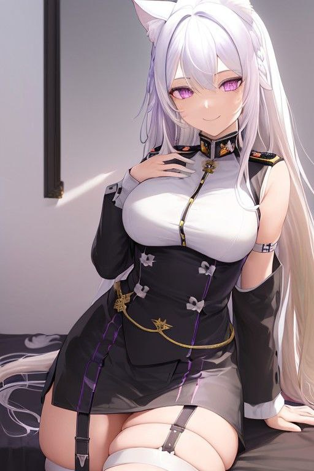

Имя: Seni Oberwaffen
Роль: Обергенерал
Подчинение: S.T.R.I.K.E.
Статус: Активен
Биография
Одна из старейших обергенералов C.A.A.S., начала проходить службу со времен Н.М.К.. Главная в семье Оберваффенов, имеет сестёр Рени и Рюми, а так-же дочь Сери Оберваффен
Дополнительно
- Написала устав семьи
- Создатель сектретного пункта доктрины "Об сущностях класса бог"